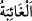

75. Gökte ve yerde göze görünmeyen hiçbir şey yoktur ki, apaçık bir kitapta
(levhi mahfuzda) bulunmasın.
Gökte ve yerde gizli hiçbir şey yoktur ki apaçık kitapta yazılmış olmasın. Yâni levh-i
mahfuzda yazılmıştır. O şeyi Cenâb-ı Allah’ın ilmi ihâta etmiştir.
“ (göze görünmeyen)” şiddet ve galebeye/üstünlüğe delâlet eden sıfatlardandır.
Sanki şöyle buyrulmuştur: Çok gizli ve son derece kapalı hiç bir şey yoktur ki,
muhakkak Allah Teâlâ onu bilir ve ilmi ile kuşatır. Gayb ve şehâdet Allah Teâlâ’nın
ilmine ve görüşüne nisbetle eşittir. Nitekim Bahru’l-hakâik’da der ki: “Bu, var olan ve
olmayan (mevcûd ve ma’dûm) muğayyebâttan hiçbir şeyin O’nun ilmine göre gizli
olmadığına delâlet eder. O’nun ilminde muğayyebâtın var edilmesinden sonraki
mâhiyetine göre varlığı ve yokluğu eşittir. Var edilmekle muğayyebâtın değişmesiyle
O’nun ilminde bir değişme olmaz. Ma’lûm/bilinen değişir, fakat ilim bütün hallerinde
değişmez, olduğu gibi kalır.”
İnsana gereken nisyânı (unutmayı) ve isyanı terk etmektir. Çünkü gizlemeye çalışsa da
Allah Teâlâ onun bütün fillerinden haberdardır.
Şeyh Sa’dî “Bostân”da der ki:
Delikanlının biri fena bir işe dadanmıştı
Bir gün iyi huylu biri onun yanına uğradı
“Eyvah, mahallenin şeyhinden pek utandım”
Diyerek, kan ter içinde kaldı
Saf kalpli şeyh bu sözü işitti
Fena halde kızdı gence, şöyle seslendi:
Hey delikanlı, sen kendinden utanmıyorsun da
Allah her yerde hâzır ve nâzır iken benden mi çekiniyorsun?
Yabancılardan ve yakınlarından nasıl utanıyorsan
Allah’tan da öylece utan
Sana dünyada hiçbir kimse rahat ve huzur vermez
O hâlde yalnız Allah’ın rızâsını elde et
Günahlarından şimdi dünyada kork ki
Kıyamet günü kimseden korkun olmasın
Günahlarına çok ağlayan kimseye
Allah hiçbir zaman yüzsuyu döktürmez
Sonra mü’minin selîm/temiz bir sadra sâhip olması gerekir. İçinde kimseye kin, hased
ve düşmanlık saklamamalıdır. Bir hadîste şöyle buyrulmuştur: “Şu kapıdan ilk giren
cennet ehlindendir.” Bir müddet sonra Abdullah b. Selâm (r.a.) o kapıdan girdi.
Rasûlulllah (s.a.)’in ashâbından bazıları kalktılar, ona bunu haber verdiler. Ona: “Keşke
kendisiyle cennete girmeyi umduğun en sağlam amelini bize haber versen.” dediler. O
şöyle dedi: “Ben zayıf biriyim. Kendisiyle cennete girmeyi umduğun en sağlam